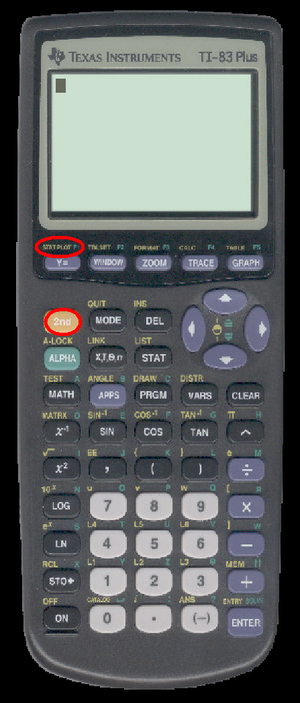
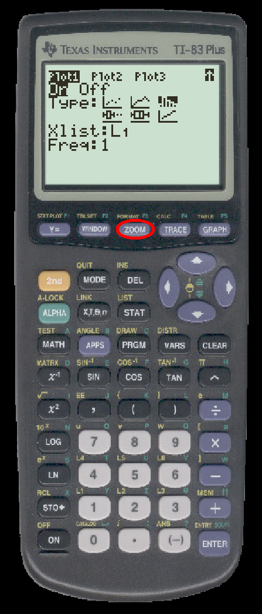
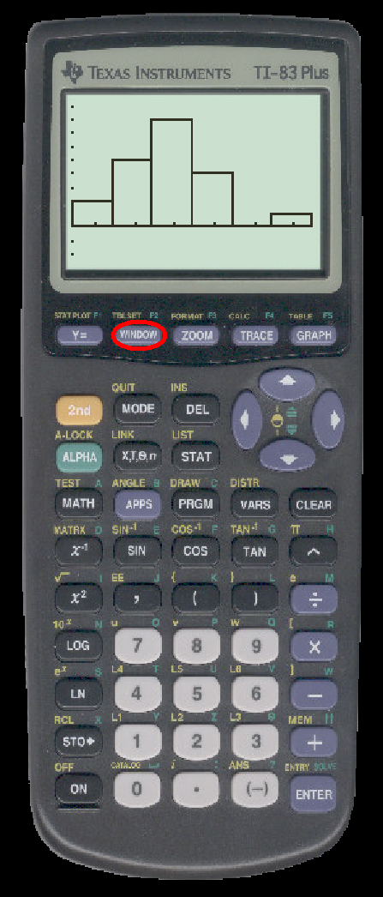
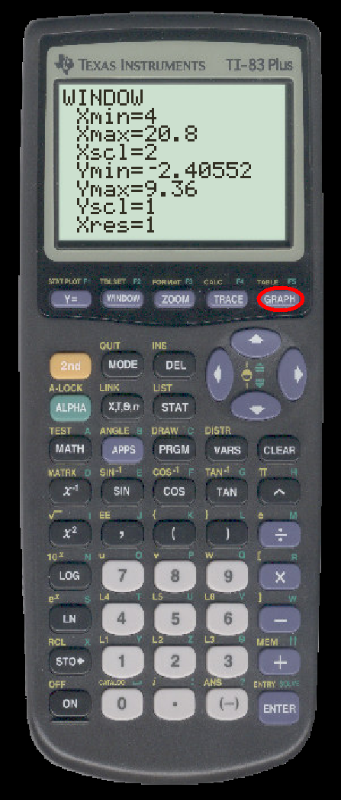

TO DRAW A HISTOGRAM ON THE TI
- Enter your data in a list. We will use L1.

- Press 2nd-STAT PLOT

- The STAT PLOT button will bring up this dialogue:

Press ENTER to select Plot1
- Plot1 may initially look like this:

Use the arrows to move to ``On'' and press ENTER to turn the plot on.
- Use the arrows to move to the little graph that looks like a histogram. Press ENTER. Your calculator should now look like:

- Press the ZOOM button

- You will see the ZOOM menu:

Scroll down to select the option ``ZoomStat''

- The TI will select a class width and draw a histogram:

TO CHANGE THE CLASS WIDTH
- Press the WINDOW button:

- Change to Xscl value to whatever you want:
 ->
->

- Press the GRAPH button:

- You will see a new histogram: